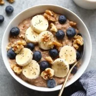

Oatmeal

Healthy Oatmeal Recipe
Who likes healthy tasting? Well, this doesn't taste healthy.
Ingredients:
- 1 cup rolled oats
- 2 cup plain, unsweetened almond milk any kind of milk works
- 1 medium banana mashed
- 1/2 teaspoon vanilla extract
- 1/2 teaspoon ground cinnamon
- pinch of salt
Directions:
-
Combine all ingredients
Into a small saucepan and turn heat to medium/high.
-
Bring to a boil.
Then, turn the heat down to low/medium and continually stir for around 3-5 minutes
as the oatmeal cooks and thickens.
-
Once oatmeal is at the desired consistency
Remove from heat, and serve immediately.
Homepage